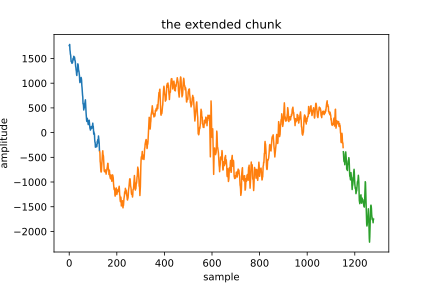

InterCom transmits a stereo (two channels) PCM signal. In most cases, the channels are highly correlated (especially when the microphone is mono because both channels are identical), which means that we can find a more efficient representation. To perform this inter-channel decorrelation [4] we can use the linear transform [8] \begin {equation} {\mathbf w} = {\mathbf K}{\mathbf x} = \begin {bmatrix} \mathbf {K}_0 \\ \mathbf {K}_1 \end {bmatrix} = \begin {bmatrix} 1 & 1 \\ 1 & -1 \end {bmatrix} {\mathbf x}, \label {eq:forward_transform_matrix_form} \end {equation} that can be also written as \begin {equation} \begin {bmatrix} {\mathbf w}_0 \\ {\mathbf w}_1 \end {bmatrix} = \begin {bmatrix} 1 & 1 \\ 1 & -1 \end {bmatrix} \begin {bmatrix} {\mathbf x}_0 \\ {\mathbf x}_1 \end {bmatrix}, \label {eq:forward_transform_matrix_form2} \end {equation} where \({\mathbf x}\in \mathbb {Z}^2\) is a stereo frame, \(\mathbf K\) is the forward (or analysis) transform matrix, and \({\mathbf w}=\begin {bmatrix} {\mathbf w}_0 & {\mathbf w}_1\end {bmatrix}^{\text T}\) is the corresponding decomposition. In this particular transform, the decomposition has two subbands \({\mathbf w}_0\) and \({\mathbf w}_1\), and each subband has only one coefficient. Notice that \({\mathbf x}\in \mathbb {Z}^2\) is a vector space1 if we consider also the required operations.
The proposed matrix \(\mathbf K\) corresponds to the transform used in Mid/Side (M/S) stereo coding [2] that we will call MST (Mid/Side Transform). This is similar to the \(2\times 2\) KLT (Karhunen-Loève Transform), the Haar Transform [10] and the \(2\times 2\) Discrete Walsh-Hadamard Transform [7].
In general (for all the linear transforms), Eqs. \eqref{eq:forward_transform_matrix_form} and \eqref{eq:forward_transform_matrix_form2} can be also expressed as \begin {equation} {\mathbf w}_u = \sum _i {\mathbf K}_{u,i}{\mathbf x}_i, \label {eq:forward_transform_linear_combination_form} \end {equation} where \({\mathbf K}_{u,i}\) denotes \(i\)-th element of the \(u\)-th row of the matrix \(\mathbf K\).
A major difference between the transformed data \(\mathbf w\) and the original data \(\mathbf x\) is that the characteristics of the elements of \(\mathbf w\) are determined by their position within the decomposition \(\mathbf w\) [7]. Thus, as a consequence of how the matrix has been defined, the subband \({\mathbf w}_0\) represents (very roughly) the low frequencies of \(\mathbf x\), and \({\mathbf w}_1\) the high frequencies. Therefore, the values of \({\mathbf K}_0\) (the row 0 of \(\mathbf K\)) describe a low-pass filter, the values of \({\mathbf K}_1\) describe a high-pass filter, and \(\mathbf K\) represents the filters of a filter bank (FB) with two filters. This can be also seen in the notebook A RD-comparison of “Stereo” Transforms.
The inverse (or synthesis) transform \begin {equation} {\mathbf x} = {\mathbf K}^{-1}{\mathbf w} \label {eq:inverse_transform} \end {equation} can be deduced from Eq. \eqref{eq:forward_transform_matrix_form}, where we get that \begin {equation} \begin {array}{rcl} {\mathbf w}_0 & = & {\mathbf x}_0 + {\mathbf x}_1\\ {\mathbf w}_1 & = & {\mathbf x}_0 - {\mathbf x}_1. \end {array} \end {equation} By solving \({\mathbf x}_0\) (adding) and \({\mathbf x}_1\) (substracting) in these equations, we obtain that \begin {equation} \begin {array}{rcl} {\mathbf x}_0 & = & \frac {1}{2}({\mathbf w}_0 + {\mathbf w}_1)\\ {\mathbf x}_1 & = & \frac {1}{2}({\mathbf w}_0 - {\mathbf w}_1), \end {array} \end {equation} that in matrix form becomes \begin {equation} \begin {bmatrix} {\mathbf x}_0 \\ {\mathbf x}_1 \end {bmatrix} = \frac {1}{2} \begin {bmatrix} 1 & 1 \\ 1 & -1 \end {bmatrix} \begin {bmatrix} {\mathbf w}_0 \\ {\mathbf w}_1 \end {bmatrix}. \end {equation} Therefore, \begin {equation} {\mathbf x} = {\mathbf K}^{-1}{\mathbf w} = \frac {1}{2}{\mathbf K}^{\text T}{\mathbf w} = \frac {1}{2}{\mathbf K}{\mathbf w} = \frac {1}{2}\begin {bmatrix} 1 & 1 \\ 1 & -1 \end {bmatrix}{\mathbf w}. \label {eq:inverse_transform_matrix_form} \end {equation}
As can be seen (if we ignore the \(\frac {1}{2}\) scale factor) the inverse transform is the transpose of the forward transform (\({\mathbf K}^{-1}={\mathbf K}^{\text T}\)). This is a characteristic of all orthogonal transforms [7]. For the MST, specifically, it also holds that \({\mathbf K}^{\text T}={\mathbf K}\) because \(\mathbf K\) is symmetric.
Apart from checking that \({\mathbf K}^{-1}={\mathbf K}^{\text T}\), \(\mathbf K\) is orthogonal if the inner product2 of the filters3 of \(\mathbf K\) is \(0\) between the different filters (rows of the matrix)4. In our case \({\mathbf K}_0=\begin {bmatrix}1 & 1\end {bmatrix}\) and \({\mathbf K}_1=\begin {bmatrix} 1 & -1\end {bmatrix}\) , and as we can see \begin {equation} \langle {\mathbf K}_0,{\mathbf K}_1 \rangle = \langle \begin {bmatrix} 1 & 1 \end {bmatrix} , \begin {bmatrix} 1 & -1 \end {bmatrix} \rangle = \begin {bmatrix} 1 & 1 \end {bmatrix} \cdot \begin {bmatrix} 1 & -1 \end {bmatrix} = 1\times 1 + 1\times -1 = 0, \end {equation} which means that the filters \({\mathbf K}_0\) and \({\mathbf K}_1\) are linearly independent5.
Notice also that \begin {equation} {\mathbf w}_i = \langle {\mathbf x}, {\mathbf K}_i\rangle , \end {equation} which basically means6 that \({\mathbf w}_i\) is proportional to the similarity between the input signal \(\mathbf x\) and the taps of the filter \({\mathbf K}_i\). These slides can help you with this key idea.
Orthogonality is important in compression applications because the statistical correlation between subbands is 0, and therefore, the contributions of the subbands to the reconstruction of the original signal are independent7. Another interesting property satisfied by a lot of famous transforms (such as the Fourier Transform) is orthonormality, which means that the transform is energy preserving [7] (or that the Parseval’s theorem is satisfied, in both, the analysis and the synthesis transform).
The MST is not orthonormal, because \begin {equation} \sum _i {{\mathbf w}_i}^2 = ({\mathbf x}_0 + {\mathbf x}_1)^2 + ({\mathbf x}_0 - {\mathbf x}_1)^2 = ({\mathbf x}_0^2 + 2{\mathbf x}_0{\mathbf x}_1+{\mathbf x}_1^2) + ({\mathbf x}_0^2-{\mathbf 2}x_0{\mathbf x}_1+{\mathbf x}_1^2) = 2({\mathbf x}_0^2+{\mathbf x}_1^2) = 2\sum _i {{\mathbf x}_i}^2. \label {eq:No_Parseval} \end {equation} For this reason, we must divide the synthesized samples by \(2\) (see Eq. \eqref{eq:inverse_transform_matrix_form}). On the contrary, we would get \(2{\mathbf x}\) as the reconstructed signal instead of \(\mathbf x\).
Ideally, the QSS (Quantization Step Size) \(\Delta _i\) used for a subband \({\mathbf w}_i\) must operate in the RD curve \(f_i\) with the same slope than the rest of subbands [11, 7] (this is the same to say that we must satisfy that \(f'_0(x)=f'_1(x)\), where \(f'\) denotes the derivative of \(f\)). The main drawback of this approach is that the finding of \(f_i\) is computationally intensive (we must analyze, quantize, compress, decompress, dequantize, synthesize and compute the distortion of the data for a enoughly high number of quantization steps), and usually we cannot do that in real-time.8
For this reason, in the notebook A RD-comparison of “Stereo” Transforms we explore a different solution based on the idea that the contribution (in terms of energy) of the subbands to the reconstruction of the signal \(\mathbf x\) should be proportional to the gain of each synthesis9 filter of \({\mathbf K}^{-1}\) (remember that we are working with orthogonal transforms and therefore, the contribution of the subbands are independent). Thus, if the filters had different gains, the QSSs should consider this fact using a smaller QSS where the gain is higher.10
By definition, the contribution of the subband \({\mathbf w}_i\) to the reconstruction of the frame is proportional to the L\(^2\) norm11 (or “squared” norm) of the (analysis) filter \({\mathbf K}_i^{-1}\). Thus \begin {equation} \begin {array}{l} \left \| {\mathbf K}_0^{-1} \right \|_2 := \sqrt {\langle \begin {bmatrix} \frac {1}{2} & \frac {1}{2} \end {bmatrix}, \begin {bmatrix} \frac {1}{2} & \frac {1}{2} \end {bmatrix} \rangle } = \sqrt {\begin {bmatrix}\frac {1}{2} & \frac {1}{2} \end {bmatrix} \cdot \begin {bmatrix} \frac {1}{2} & \frac {1}{2} \end {bmatrix}} = \frac {1}{\sqrt {2}},\\ \left \| {\mathbf K}_1^{-1} \right \|_2 := \sqrt {\langle \begin {bmatrix} \frac {1}{2} & -\frac {1}{2} \end {bmatrix}, \begin {bmatrix} \frac {1}{2} & -\frac {1}{2} \end {bmatrix} \rangle } = \sqrt {\begin {bmatrix} \frac {1}{2} & -\frac {1}{2} \end {bmatrix}\cdot \begin {bmatrix} \frac {1}{2} & -\frac {1}{2} \end {bmatrix}} = \frac {1}{\sqrt {2}}, \end {array} \end {equation} resulting that both subbands \({\mathbf w}_1\) and \({\mathbf w}_2\) have the same gain (\(1/\sqrt {2}\)). This result tell us that both subbands could use the same quantization step size (\(\Delta _0=\Delta _1\)). In the notebook A RD-comparison of "Stereo" Transforms there are some evidences of this.
Unfortunately, most of the transform are not implemented using matrix-vector operations, but using faster algorithms based on a lattice of computational bufferflies or filter convolutions (and therefore, we don’t know \(\mathbf K\)). Fortunately, we can determine \({\mathbf K}_i^{-1}\) (and therefore, \(\mathbf K\)) by simply computing the inverse transform of the decomposition \(\begin {bmatrix} 0 & \cdots & 0 & 1 & 0 & \cdots & 0 \end {bmatrix}^{\text T}\), where the \(1\) value is in the position \(i\) (only the subband \({\mathbf w}_i=1\), the rest are “zeroed”)).12 In our example, we get that
\begin {equation} \begin {array}{l} {\mathbf K}_0^{-1} = \frac {1}{2} \begin {bmatrix} 1 & 1 \\ 1 & -1 \end {bmatrix} \begin {bmatrix} 1 \\ 0 \end {bmatrix} = \frac {1}{2} \begin {bmatrix} 1 & 1 \end {bmatrix}, \\ {\mathbf K}_1^{-1} = \frac {1}{2} \begin {bmatrix} 1 & 1 \\ 1 & -1 \end {bmatrix} \begin {bmatrix} 0 \\ 1 \end {bmatrix} = \frac {1}{2} \begin {bmatrix} 1 & -1 \end {bmatrix}. \end {array} \end {equation}
As a final remark, we could also consider that any alternative other than \(\Delta _0=\Delta _1\) will affect to the spatial perception of the audio. The notebook A RD-comparison of "Stereo" Transforms gives more information about this.
After exploiting the spatial (stereo) redundancy, the next natural step in the development of InterCom is to remove the temporal redundancy that can be found inside of each subband13. As it can be seen in the notebook Audio Viewer, most audio signals show “patterns” of samples that tends to repeat, especially locally. Another clear source of temporal redundancy is that the neighbor audio samples usually show similar amplitude values.
There are several techniques that can be used for removing the temporal redundancy of a sequence of audio. One of the most straightforward is Differential Pulse Code Modulation (DPCM) [7]. However, there are more efficient decorrelation algorithms based on Transform Coding, such as the described in the previous section and in this one.
As it has been explained before, Transform Coding is based on the idea that we can decompose the input signal into a set of subbands, and if the used filters are the adecuate ones for removing the (in this case, temporal) redundancy, we can achieve a high Transform Coding Gain [7], accumulating the most part of the signal energy (and presumably most of the information) in a small number of subbands. When this happens, the quantization of the subbands will remove basically the least significant information (usually electronic noise), allowing better compression ratios than those in which we apply the same quantization process to the original samples.14
Subband Coding15 is a particular case of Transform Coding where the rows of the transform matrix are the taps of digital filters16 In this context, our analysis transform matrix \(\mathbf K\) (see the previous section) represents the taps of a 2-channels analysis Filter Bank (FB) [10], and the forward transform is in fact “descomposing” \(\mathbf x\) into two subbands \({\mathbf w}_0\) and \({\mathbf w}_1\) (see the Figure 1, and the notebook A Perfect Reconstruction Filter Bank (PRFB)). On the other hand, the synthesis transform matrix \({\mathbf K}^{-1}\) denotes the taps of the corresponding synthesis FB that allows to recover \(\mathbf x\) (notice that in the figure, \({\mathbf x}={\mathbf l}^i\), \({\mathbf w}_0={\mathbf l}^{i+1}\), \({\mathbf w}_1={\mathbf h}^{i+1}\), \(\tilde \phi ={\mathbf K}_0\), \(\tilde \psi ={\mathbf K}_1\), \(\phi ={\mathbf K}^{-1}_0\), and \(\psi ={\mathbf K}^{-1}_1\)).
Let’s suppose now that the analysis filters (represented by the taps of) \({\mathbf K}_0\) and \({\mathbf K}_1\) are applied to the input signal \(\mathbf x\) (now a sequence of \(N\) samples) using a convolution (without splitting \(\mathbf {x}\) into blocks). Let’s also suppose (as happens in the MST) that \({\mathbf K}_0\) is a low-pass filter and \({\mathbf K}_1\) is a high-pass filter, and that the frequency response17 of both filters are one the inverse of the other. Under these assumptions, the complete (analysis/synthesis) transform is called a (2-channels) Perfect Reconstruction Filter Bank (PRFB), and \(\mathbf x\) can be recovered (perfectly) from a subsampled version (in this case decimating by 2 because we have two channels in the FB) of \({\mathbf w}_0\) and \({\mathbf w}_1\) (see the notebook A Perfect Reconstruction Filter Bank (PRFB)). Notice that this subsampling is possible because the aliasing18 generated in the low-pass subband is attenuated by the aliasing generated in the high-pass subband. To achieve this, the frequency response of \({\mathbf K}_0\) must be equal to the mirrored frequency response of \({\mathbf K}_1\), and obviously, both filters must have the same bandwidth [7]. In this situation, in which \({\mathbf K}_1\) and \({\mathbf K}_2\) are mirror filters, we say that they form a Quadrature Mirror Filters (QMF) Bank.
Using the suitable filters, it is possible to build \(M\)-channels PRFBs.19 These filters can analyze (and synthesize) the signal \(\mathbf x\), decomposing it in (almost for sure) overlaping frequency subbands with different bandwidth. The question here is to know how many filters should be used and what pass-band width should they have. At this design point, we must also consider that the accuracy of the humman perception of the sound depends on the frequency: (as it can be checked20 with the notebook Tonal Generator) we are more sensitive to frequency variations when the frequency of the sound is low21. This fact is related with the way in which the critical bands are distributed in the Bark Scale.
As it can be seen, the Bark Scale divides the audible spectrum into 24 subband of (a priori) “whimsical” bandwidths. However, it’s clear that a dyadic partition of the spectrum fits better than a lineal partition. Considering this reason, from all the families of transforms designed to date, the most suitable one, from a frequency partitioning point of view, is the Discrete Wavelet Transform (DWT).
The DWT has also other interesting features:
The DWT can be implemented in different ways:
In order to clarify the previously introduced concepts, let’s build a DWT using the MST filters and lifting.
Lifting is based on the concept of dyadic multiresolution analysis, and also with the so called polyphase representation of signals. In order to do that, we can rewrite the MST filter equations (our \({\mathbf K}_0\) and \(-{\mathbf K}_1\) filters in the previous section) as \begin {equation} \begin {array}{rcl} {\mathbf l}^1_i & = & {\mathbf x}_{2i} + {\mathbf x}_{2i+1} \\ {\mathbf h}^1_i & = & {\mathbf x}_{2i+1} - {\mathbf x}_{2i}, \end {array} \label {eq:1dwt} \end {equation} where the \(l\)-th subband \({\mathbf z}^l=\{{\mathbf z}_i^l~|~0\le i\le 2^{n-l}\}\), being \(2^n=N\) the number of samples in \(\mathbf x\), and where, by definition, \({\mathbf l}^0={\mathbf x}\), the original resolution level of the signal. The subbands \({\mathbf l}^1\) and \({\mathbf h}^1\) computed by Eq. \eqref{eq:1dwt} are the same than the decimated subbands computed by a 1-levels PRFB (based on that filters), and we say, therefore, that Eq. \eqref{eq:1dwt} computes the 1-levels DWT.
Based on the 1-levels DWT, we define the 2-levels DWT as \begin {equation} \begin {array}{rcl} {\mathbf l}^2_i & = & {\mathbf l}^1_{2i} + {\mathbf l}^1_{2i+1} \\ {\mathbf h}^2_i & = & {\mathbf l}^1_{2i+1} - {\mathbf l}^1_{2i}, \end {array} \label {eq:2dwt} \end {equation} that, as we can see, uses as input the output of Eq. \eqref{eq:1dwt}.
In general, for a \(l\)-levels DWT, we get \begin {equation} \begin {array}{rcl} {\mathbf l}^l_i & = & {\mathbf l}^{l-1}_{2i} + {\mathbf l}^{l-1}_{2i+1} \\ {\mathbf h}^l_i & = & {\mathbf l}^{l-1}_{2i+1} - {\mathbf l}^{l-1}_{2i}. \end {array} \label {eq:ldwt} \end {equation}
The \(l\)-levels DWT splits the signal spectrum in \(l+1\) subbands. If \(l=n\) (where \(N=2^n\)), we have the spectrum partition \begin {equation*} | \mathbf {l}^s_0 | \mathbf {h}^s_0 | \mathbf {h}^{s-1}_0 \mathbf {h}^{s-1}_1 | \mathbf {h}^{s-2}_0 \mathbf {h}^{s-2}_1 \mathbf {h}^{s-2}_2 \mathbf {h}^{s-2}_3 | \cdots | \mathbf {h}^1_0 \mathbf {h}^1_1 \cdots \mathbf {h}^1_{2^{n-1}-1} |, \end {equation*} where23 it holds that \begin {equation} 1+\sum _{j=1}^l 2^{j-1}=2^n, \end {equation} i.e., the number of DWT coefficients is also \(N\).
DWT performs a number of lifting steps, each one with 2 (sub)steps:
Notice that these steps are invertible: \begin {equation} \begin {array}{rcl} {\mathbf l}^{l-1}_{2i} & = & \frac {1}{2}({\mathbf l}^l_i - {\mathbf h}^l_i)\\ {\mathbf l}^{l-1}_{2i+1} & = & {\mathbf l}^{l-1}_{2i} + {\mathbf h}^l_i. \end {array} \end {equation}
In the context of the wavelet theory [3], the response of the analysis low-pass filter (\({\mathbf K}_0\) in the MST) to the unit impulse24 is known as the scaling function and is usually denoted by \(\tilde \phi \), the response of the analysis high-pass filter (\({\mathbf K}_1\)) is known as the wavelet function and it is usually denoted by \(\tilde \psi \), the response of the synthesis low-pass filter (\({\mathbf K}^{-1}_0\)) is denoted by \(\phi \) and the synthesis high-pass filter (\({\mathbf K}^{-1}_1\)) is represented by \(\psi \), that are the dual scaling and wavelet functions.
For the MST it holds that \(\tilde \phi \bot \tilde \psi \), \(\tilde \phi =\psi \) and \(\tilde \psi =\phi \), and this is also true for all orthogonal DWTs. Another important characteristic of orthogonal DWTs is that the filters cannot be symmetric.25
The previous MST-based DWT is similar to other transforms such as the Haar transform, in which we are using an 1-order predictor for removing the temporal redundancy. Let’s extend the idea of lifting to a prediction of order two. For that, we define the predict step as \begin {equation} {\mathbf h}^l_i = {\mathbf l}^{l-1}_{2i+1} - \frac {1}{2}({\mathbf l}^{l-1}_{2i} + {\mathbf l}^{l-1}_{2i+2}) \end {equation} and the update step as \begin {equation} {\mathbf l}^l_i = {\mathbf l}^{l-1}_{2i} + \frac {1}{4}({\mathbf h}^l_{i-1} + {\mathbf h}^l_i), \end {equation} where the factor \(1/4\) is used to preserve the energy [9]. This transform is known as the biorthogonal (2,2) of Cohen-Daubechies-Feauveau. Biorthogonal26 filters can be easely recognized because they are always symmetric. When the filters of the PRFB are biorthogonal, they also satisfy that \(\psi \bot \tilde \phi \) and \(\phi \bot \tilde \psi \).
This linear transform is also invertible by simply reversing the steps: \begin {equation} \begin {array}{rcl} {\mathbf l}^{l-1}_{2i} & = & {\mathbf l}^l_i - \frac {1}{4}({\mathbf h}^l_{i-1} + {\mathbf h}^l_i)\\ {\mathbf l}^{l-1}_{2i+1} & = & {\mathbf h}^l_i + \frac {1}{2}({\mathbf l}^{l-1}_{2i} + {\mathbf l}^{l-1}_{2i+2}). \end {array} \end {equation}
The QSSe to be used in the different subbands of a (orthogonal) decomposition should be inversely27 proportional the gain of the synthesis filters. The gain of a filter correspond to the L\(^2\) norm of its taps, and the final gain applied to a subband depends logically on the number of times that we have applied the filter in the cascade. Notice that, if we don’t know the taps, we can use the algorithm described in the Section 1.1.4 to find the gain of the subbands.
Finally, notice that if the transform in orthonormal, by definition, the gain of the analysis and synthesis filters is always 1, and also this is the gain of the subbands.
Transform Coding implies to split the signal into blocks of data (chunks), and to compute the transform of each chunk. When the output coefficients are quantized, it is possible that significative (and unpleasant) distortions may appear in the border frames of the chunks (see Fig. 3). This is a consequence that in the prediction step used by the DWT in the limits of the chunks generate different predictions at the beginning and the end of the adjacent chunks.
 |  |
|  |  |
One solution to avoid signal discontinuitites between chunks is to overlap the chunks. Thus, the current (\(i\)-th) chunk uses also the last frames of the previous (\((i-1)\)-th) chunk and the first frames of the next (\((i+1)\)-th) chunk to compute the transform of the current extended (\(i\)-th) chunk (see the Fig. 4). This has been described in the following algorithm:
For \(i\in \{0,1,\cdots \}\):
Notice that we are following the NumPy [1, 5] slicing notation.
For \(i\in \{0,1,\cdots \}\):

This idea has been implemented in the notebook Overlapped DWT, and the result can be seen in the Fig. 3.
Unfortunately, the previous algorithm sends twice the DWT coefficients of the overlapped areas (in the Fig. 4, \(\{{\mathbf D}_i.{\mathbf l}^2[-o/4:], {\mathbf D}_i.{\mathbf l}^2[:o/4], {\mathbf D}_i.{\mathbf h}^2[-o/4:], {\mathbf D}_i.{\mathbf h}^2[:o/4], {\mathbf D}_i.{\mathbf h}^1[-o/2:], {\mathbf D}_i.{\mathbf h}^1[:o/2]\}\)). To avoid this waste of bandwidth, we can reuse the received coefficients of the overlapped areas. This procedure has been described in the Fig. 5, and, as it can be seen, the encoding algorithm is identical to the previous one except in that only the central (stereo) coefficients are sent. The rest of coefficients that are needed to compute the inverse transform are extracted from the neighbor chunks (represented in the DWT domain). Notice that now, the number of sent coefficients is \(\text {len}({\mathbf C}_i)\), the number of samples in \({\mathbf C}_i\).

The codec now can be described by:
For \(i\in \{0,1,\cdots \}\):
This decoder ignores the adjacent chunks in the DWT domain, but notice that it uses the right coefficients (those computed using overlapping chunks). This should provide reconstructions of the chunks with a higher quality that in the previous milestone.
For \(i\in \{0,1,\cdots \}\):
For \(i\in \{0,1,\cdots \}\):
As we did in the previous milestone, generate the RD curves for a set of simulated transmission contexts. Use the modules stereo_MST_coding{|_16|_32}.py. As you can see, they differs in how the transform has been implemented.
Rebuild the RD curves considering also the temporal decorrelation. Use temporal_no_overlapped_DWT_coding.py. Notice that the number of levels \(l\) of the DWT (computed using PyWavelets [6]) can have a high impact on the amount of energy concentration achieved by the DWT, and therefore, on the efficiency of coding system. Show such impact. Experiment also with the wavelet name.
Finally, redo the curves considering now the block overlapping (temporal_overlapped_DWT_coding.py). It is a good idea to put all the RD curves together (in the same graph), to compare easely,
Visualize the effects (in the DWT domain) of quantization.
qjackctl & # Select sampling frequency 44100 Hz python temporal_overlapped_DWT_coding.py -i 6 -o 6 --show_stats -q 8192 # Connect the output of temporal_overlapped_DWT_coding.py to the input of dwt5.py python dwt5.py -d 9
A description of the experiments and their results.
[1] S. Berg et al. The NumPy project.
[2] M. Bosi and R.E. Goldberd. Introduction to Digital Audio Coding and Standards. Kluwer Academic Publishers, 2003.
[3] C.S. Burrus, R. Gopinath, and H. Guo. Wavelets and Wavelet Transforms. Rice University, 2013.
[4] A.B. Downey. Think Stats Probability and Statistics for Programmers. O’Reilly, 2011.
[5] C. R. Harris, K. J. Millman, S. J. van der Walt, R. Gommers, P. Virtanen, D. Cournapeau, E. Wieser, J. Taylor, S. Berg, N. J. Smith, et al. Array programming with NumPy. Nature, 585(7825):357–362, 2020.
[6] G. Lee, R. Gommers, F. Waselewski, K. Wohlfahrt, and A. O’Leary. PyWavelets: A Python package for wavelet analysis. Journal of Open Source Software, 4(36):1237, 2019.
[7] K. Sayood. Introduction to Data Compression. Morgan Kaufmann, 2017.
[8] G. Strang. Linear Algebra and Its Applications. Belmont, CA: Thomson, Brooks/Cole, 2006.
[9] W. Sweldens and P. Schröder. Building Your Own Wavelets at Home. Wavelets in Computer Graphics, 1997.
[10] M. Vetterli and J. Kovačević. Wavelets and Subband Coding. Prentice-hall, 1995.
[11] M. Vetterli, J. Kovačević, and V.K. Goyal. Foundations of Signal Processing. Cambridge University Press, 2014.
1Adding two vectors in the plane produces a third one also in the plane; multiplying a vector by a real scalar produces a second vector also in the plane. These two ingrained facts make the real plane be a vector space. [11]
2The inner product between two vectors is in some sense a measure of how “similar” they are [7]. In fact, the dot product computes the norm (a measure of the distance between vectors). [11] Notice also, that the inner product is also called the dot product and the scalar product when we work with real signals. [11]
3When we are working with discrete signals, we usually talk about vectors instead of functions. These vectors are sampled versions of the corresponding functions, or as happen in our case, the taps of the filters, each one representing a basis vectors.
4If a set of vectors are linearly independent, then the set is called a basis for the subspace generated by linear combinations of this set. The basis set contains the smallest number of linearly independent vectors required to represent each element of the vector (sub)space. The number of basis vectors required to generate the space is called the dimension of the vector space [7]. In our case, for the MST, we have two basis vectors.
5In terms of orthogonality, this means that we cannot derive one from the other using the operations that define a vector space, and therefore the basis vectors can be a part a basis (set) [8].
6Remember that for the MST a subband has only one coefficient. For other transforms, \({\mathbf w}_i\) can be made up of more than one coefficient and therefore, we would be speaking of the coefficients of the subband, instead of only one coefficient.
7The total distortion is the sum of the distortion contribution of each subband [7].
8Notice, however, that this would solve the problem of controlling the bit-rate because using the RD curves we know how many bits will require each subband.
9Notice that the quantization error is generated in the transform domain and perceived in the signal domain after appliying the inverse transform.
10Notice that the important here is the relative gain of each subband. For example, if the gain of \({\mathbf K}_0^{-1}\) were \(2\) and the gain of \({\mathbf K}_1^{-1}\) were \(1\), we should use \(\Delta _1=2\Delta _0\) to minimize the distortion, because a quantization error of a coefficient in \(\mathbf {w}_0\) is two times the quantization error of a coefficient in \(\mathbf {w}_0\).
11L\(_2(f)\) (where \(f\) is a function) is the set of all functions with finite energy and constitues a vector space [7]. \(L_2({\mathbb R})\) of simply \(L_2\) is the space of all functions \(f(t)\) with a well defined integral of the square of the modulus of the function. The \(L\) signifies a Lebesque integral, the “2” denotes the integral of the square of the modulus of the function, and \(\mathbb R\) states that the independent variable of integration is a number over the whole real line. For a function \(g(t)\) to be a member of that space is denoted: \(g\in L^2({\mathbb R})\) or simply \(g\in L^2\) [3]. The computation of the L\(^2\) form is equivalent to compute the Euclidean distance in \(N\)-dimensional (in our case, \(N=2\)) spaces.
12Notice that this operation will “extract” the \(i\)-th column from \({\mathbf K}^{-1}\) that is equivalent to say that will “extract” the \(i\)-th row of \(\mathbf K\), \({\mathbf K}_i\) (remember that for orthogonal transforms, \({\mathbf K}^{-1}={\mathbf K}^{\text T}\)).
13Notice that, beacuse the MST and the transform used in this milestone are both lineal, the order in which the transforms are applied is irrelevant. For this reason, we could also have used the temporal transform inside of each channel of samples, and then, remove the spatial redundancy.
14Notice that is we dead-zone quantize a decomposition and most of the coefficients are close to zero, the information removed from the signal will be those with a smaller energy.
15In signal processing, sub-band coding (SBC) is any form of transform coding that breaks a signal into a number of different frequency bands.
16In theory, such rows could be any mathematical operation, not necessarily a filter.
17The response (in the frequency domain) of the filter to the unit impulse.
18Because the filters are not ideal, the bandwidth of the filtered signals \({\mathbf w}_0\) and \({\mathbf w}_1\) is bigger than half of the bandwidth of \(\mathbf x\). Therefore, subsampling at a ratio of one of each two coefficients, we are generating aliasing. See the sampling theorem.
19Notice that our matrix \(K\) would have \(M\) rows in this case, and also \(M\) columns, to satisfy that \({\mathbf K}^{-1}={\mathbf K}^{\text T}\) if we are implementing an orthogonal transform.
20You need to generate tonal sounds with different frequency and amplitudes.
21And also, we are more sensitive to low frequencies that to high ones.
22Notice that in a typical cascade, the filters are always the same. Therefore, we only need to store in memory only a copy of each different filter.
23The coefficient \({\mathbf l}^l_0\) is called the DC (Direct Current) coefficient, and the rest of \(\mathbf h\) coefficients are called AC (Alternating Current) coefficients.
24The response of a filter to the unit impulse characterize the filter because the output of the filter is the set of taps of the filter.
25The symmetry of the filters is important to produce the same type of artifacts in the boundaries of the signal and also to avoid the phase-shifting of the coefficients in the wavelet domain.
26All transforms express a change of basis. When the basis are not orthogonal, the synthesis transform is not the transpose of the analysis transform. When the synthesis filters are orthogonal to their corresponding “dual” analysis filters, the transform is said biorthogonal. [11]
27Remember that if the QSS is higher, the quantization error is also higher. Therefore, those subbands with a higher amplification in the inverse transform should be quantized less.